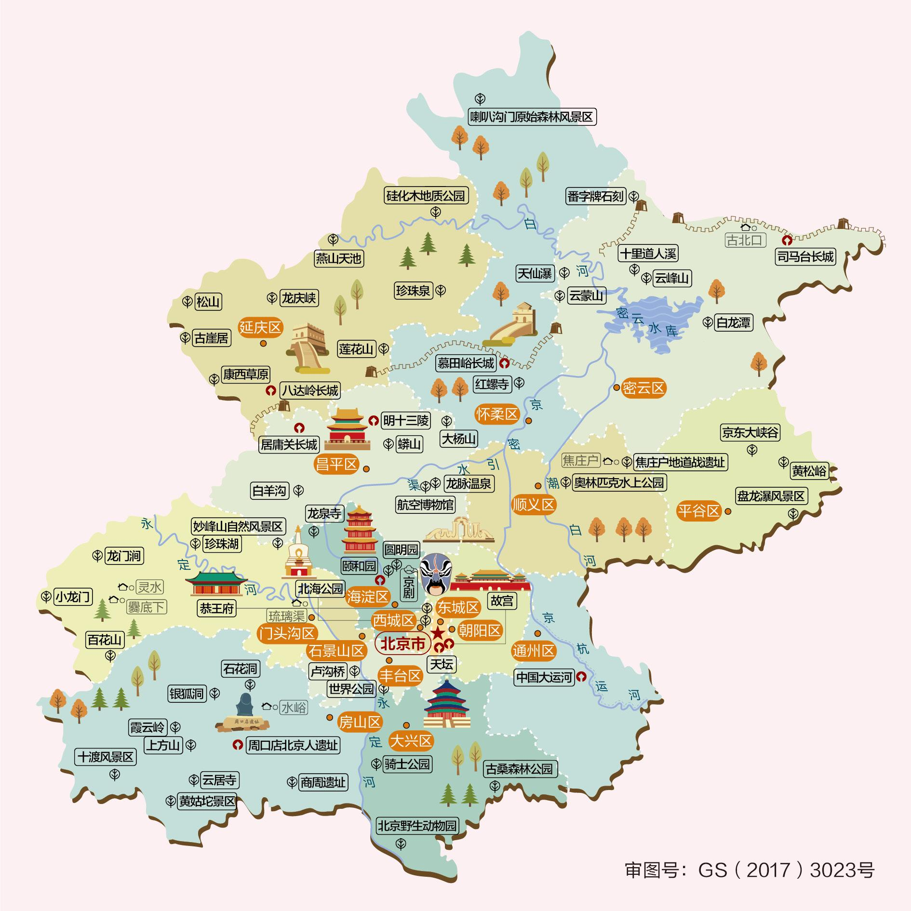

北京
北京氣候特徵
北京是中國的首都，位於北方內陸地帶，擁有豐富多樣的氣候特徵。由於地理位置偏北，青森的四季分明，每個季節都有其獨特的魅力。
4℃
冬季平均低溫
30℃
夏季平均高溫
560mm
年均降水量
四季氣候特點
春季（3月-5月）： 3月天氣多變，時有風沙，4月氣溫明顯回升，玉淵潭等處櫻花通常在3月下旬至4月中旬盛開。
夏季（6月-8月）： 炎熱潮濕，平均氣溫約25-35℃，7-8月多暴雨雷電。故宮、長城等景點遊客如織。
秋季（9月-11月）： 天高氣爽，10月是賞紅葉黃金期，香山公園與慕田峪長城的秋色最為壯觀。
冬季（12月-2月）： 乾冷少雪，平均氣溫約-5-5℃，北海公園滑冰與胡同暖鍋是特色體驗。
旅遊景點推介
>精選相片
按此放大

故宮
北京故宮位於北京市中心，為明清兩代的皇家宮殿。這座佔地約72萬平方米的龐大建築群，巍峨宮殿連綿不絕，匯集了無數殿宇樓閣與精美文物，故被譽為「宮殿之海」，吸引無數中外遊客及古建攝影愛好者。故宮是享譽中外的賞秋勝地，且被列為世界文化遺產，堪稱中國歷史與文化的巔峰象徵之一。天壇
天壇屹立北京南城，乃明清帝王祭天聖地。這片佔地273公頃的藍瓦朱牆建築群，以圜丘壇與祈年殿為軸，精妙結構暗合「天圓地方」，被譽為「天人對話的密碼」。銀杏古柏掩映四季輪轉，秋日金葉覆道尤為絕景，作為世界文化遺產，其祭祀儀典與建築哲學深植華夏文明精髓。頤和園
頤和園坐落於北京西郊，為清代皇家園林。這座佔地近300公頃的山水庭園，以昆明湖為鏡、萬壽山為屏，匯聚江南造景精髓與宮殿建築，故享有「湖山畫廊」美譽，吸引無數遊客與攝影名家。園中四季分明，尤以夏荷冬雪著稱，被列為世界文化遺產，堪稱中國古典園林的巔峰傑作。圓明園
圓明園曾位於北京西北郊，乃清代規模最大的皇家御苑。這座「萬園之園」曾匯集中西建築精粹，200餘座殿宇藏珍納奇，卻遭戰火焚毀。如今遺址殘柱默立蒼穹下，春日桃紅遍野如嘆往昔，秋日蘆雪紛飛似訴滄桑，現為愛國教育基地與遺址公園，見證民族百年榮辱。慕田峪長城
慕田峪長城蜿蜒於北京懷柔險峰，為明代邊防要塞。這段全長5.4公里的巨龍脊骨，敵樓密佈、箭孔森然，雙面垛口與「牛犄角邊」奇構冠絕眾隘，故稱「長城博物館」。春櫻點翠、秋楓染烽的四季幻景，吸引登山客與攝影師朝聖，列入世界文化遺產，盡展中華鐵壁雄魂。北京歷史之旅 (3日2夜)
主題：三日貫穿五百年帝國符號
合適群眾：歷史考據派、建築攝影控、日行三萬步暴走族
行程特點：明清帝國興衰印記，濃縮世界遺產精華
→ 動線：午門→太和殿→珍寶館→神武門
→ 要點：首批入場、租電子導覽、神武門出可順登景山
📍天壇
→ 核心：圜丘壇天心石→回音壁→祈年殿（買聯票）
→ 隱藏：西齋宮祭天文物展
夜宿：前門區域（利次日出行）
餐飲：午/故宮冰窖餐廳｜晚/前門便宜坊烤鴨
→ 動線：纜車上14號敵樓→徒步至20號頂峰→滑道下山
→ 省力：買「纜車+滑道」套票
返程增選：雍和宮閉館前速看18米木佛（視時間）
餐飲：午/虹鱒魚農家宴｜晚/五道營胡同西餐
→ 動線：新建宮門入→銅牛/十七孔橋→乘船至石舫→長廊→佛香閣
→ 秘境：諧趣園玉琴峽聽水聲
📍圓明園
→ 焦點：東門入→西洋樓遺址（大水法、黃花陣）→全景沙盤
→ 交通：遺址區騎共享單車出園
📍順路彩蛋：圓明園南門步行5分拍清華/北大校門
餐飲：午/頤和園聽鸝館宮廷菜
慕田峪：攜程買「纜車+滑道+門票」套票
圓明園：現場購大門票，遺址票園內補買
🚗交通
長城日：必包車（地鐵+公交單程逾3小時）
園林日：地鐵4號線串聯（頤和園北宮門站→圓明園站僅1站）
💡其他
週一故宮閉館！可交換第1天與第3天行程
圓明園遺址區無遮蔭：墨鏡/防曬霜必備
慕田峪滑道雨天停運：出發前查天氣
合適群眾：歷史考據派、建築攝影控、日行三萬步暴走族
行程特點：明清帝國興衰印記，濃縮世界遺產精華
🏛️第1天：皇權中軸（故宮+天壇）
📍故宮→ 動線：午門→太和殿→珍寶館→神武門
→ 要點：首批入場、租電子導覽、神武門出可順登景山
📍天壇
→ 核心：圜丘壇天心石→回音壁→祈年殿（買聯票）
→ 隱藏：西齋宮祭天文物展
夜宿：前門區域（利次日出行）
餐飲：午/故宮冰窖餐廳｜晚/前門便宜坊烤鴨
⛰️第2天：邊塞史詩（慕田峪長城專日）
📍慕田峪長城→ 動線：纜車上14號敵樓→徒步至20號頂峰→滑道下山
→ 省力：買「纜車+滑道」套票
返程增選：雍和宮閉館前速看18米木佛（視時間）
餐飲：午/虹鱒魚農家宴｜晚/五道營胡同西餐
🌳第3天：園林滄桑（頤和園+圓明園）
📍頤和園→ 動線：新建宮門入→銅牛/十七孔橋→乘船至石舫→長廊→佛香閣
→ 秘境：諧趣園玉琴峽聽水聲
📍圓明園
→ 焦點：東門入→西洋樓遺址（大水法、黃花陣）→全景沙盤
→ 交通：遺址區騎共享單車出園
📍順路彩蛋：圓明園南門步行5分拍清華/北大校門
餐飲：午/頤和園聽鸝館宮廷菜
⚠️備註
故宮/天壇/頤和園：官方公眾號提前7天預約慕田峪：攜程買「纜車+滑道+門票」套票
圓明園：現場購大門票，遺址票園內補買
🚗交通
長城日：必包車（地鐵+公交單程逾3小時）
園林日：地鐵4號線串聯（頤和園北宮門站→圓明園站僅1站）
💡其他
週一故宮閉館！可交換第1天與第3天行程
圓明園遺址區無遮蔭：墨鏡/防曬霜必備
慕田峪滑道雨天停運：出發前查天氣
其他網上行程建議(只供參考!)


- ©2025 Copyright by Raymond Chau -